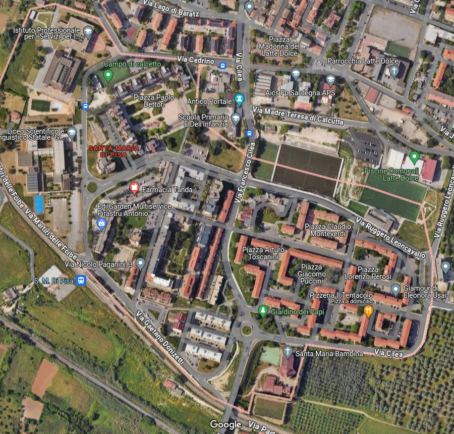

Santa Maria di Pisa
Santa Maria di Pisa è un quartiere che si è sviluppato negli anni recenti, noto per la sua vivace comunità e la varietà di servizi offerti. La zona è caratterizzata da aree residenziali e diverse opportunità di aggregazione sociale.
Punti di Ritrovo
Piazza Paolo Dettori
Punto di incontro centrale, ben frequentato durante la settimana.
Piazza Sirio
Area adatta per eventi e ritrovi informali.
Tipologia di Abitazione
- Case Popolari: Sì
- Palazzi: Sì
- Ville Private: No
- Quartiere Residenziale: Sì
- Quartiere Dormitorio: No
Attività per il Tempo Libero
Organizzate
- A.S.D. Santa Maria di Pisa - asdsantamariadipisa@gmail.com, Tel: 334 907 7644
- Campo di calcetto “Via Cedrino”
- Giardino dei Papi
Non Organizzate
Attività libere nei parchi e nei giardini pubblici del quartiere.
Servizi al Cittadino
- Protezione Civile: Sede in Via Donizetti, Tel: 079241618
- Consultorio: Servizi di assistenza in via Donizetti.
Reti Urbane e Trasporti
- Linea 22: Questa linea passa per Santa Maria di Pisa, collegandola con Latte Dolce e Piazza Vienna. Orari frequenti con una copertura continua, rendendola accessibile sia per necessità lavorative che per servizi.
- Sirio: Questa linea passa per Santa Maria di Pisa, collegandola con Latte Dolce e Piazza Vienna. Orari frequenti con una copertura continua, rendendola accessibile sia per necessità lavorative che per servizi.
- Corse Scolastiche: Diverse linee scolastiche servono la zona per collegamenti con scuole e istituti, come la Linea Scolastica 8 e la Linea Scolastica 12, agevolando gli studenti.
Scuole e Istruzione nel Quartiere
- Liceo Scientifico e Linguistico Statale "G. Marconi": Via Donizetti, 1, Tel: 079244305
- Istituto Professionale per i Servizi per l'Enogastronomia e l'Ospitalità Alberghiera: Via Cedrino, 1, Tel: 0792590077
- Scuola Primaria e dell'Infanzia: Via Cilea, 5, Tel: 079241641
Farmacie e Medici nel Quartiere
- Farmacia Tanda: Via Leoncavallo, 25, Tel: 079241618
- Emergency - Ambulatorio Sassari - Santa Maria di Pisa: Via Leoncavallo, 27, Tel: 3488689781
Note per Migliorie del Quartiere
È stata proposta la costruzione di campetti all’aperto e un consultorio per migliorare i servizi al cittadino.